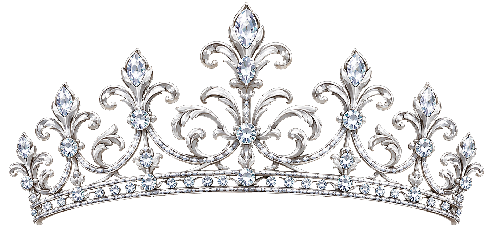
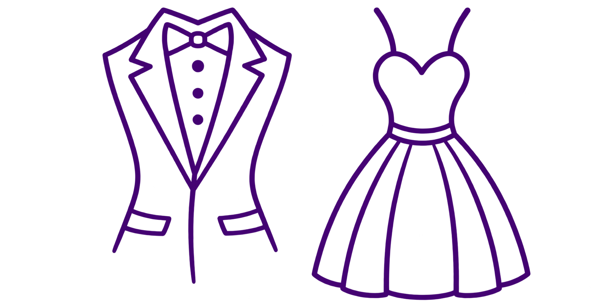
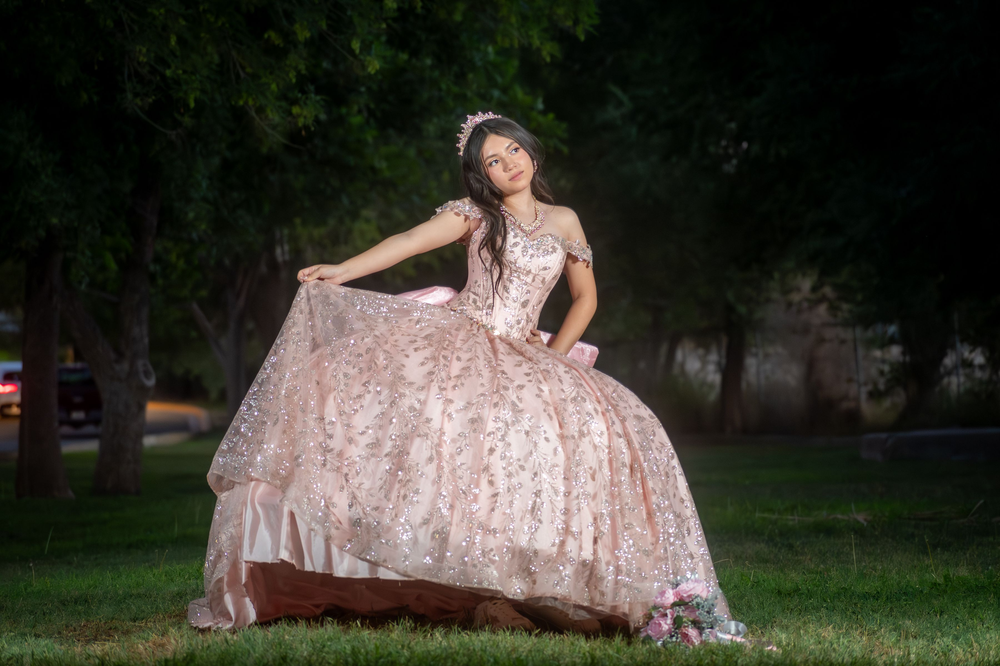
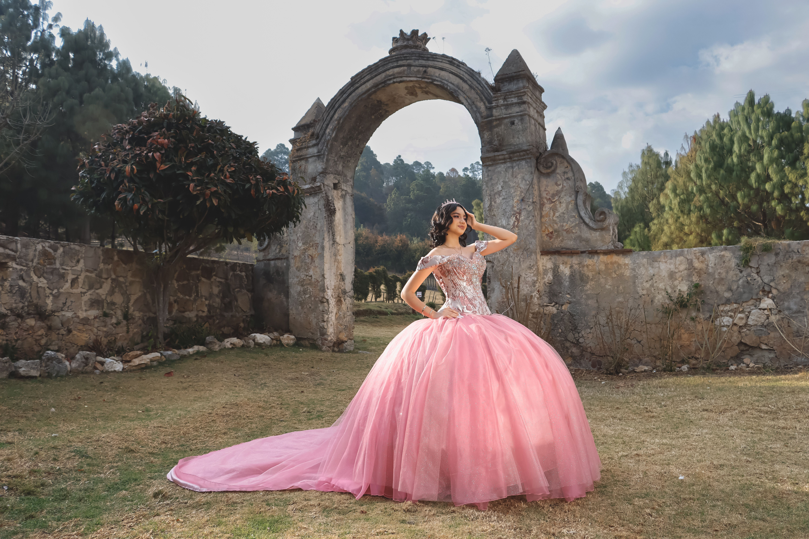

MIS 15 AÑOS
Candela
6 · 06 · 2026
¡Te espero!

Mis 15 Años
6 · 06 · 2026
¡Te espero!
Estás cordialmente invitado
Toca el sello para abrir
Dejo atrás un mundo y entro a otro nuevo... Aunque a veces dudo o temo, estoy llena de esperanzas y de sueños. Tengo la sensación de que estoy construyendo mi propio camino. Siento alegría y quiero compartirla. 1 kg de familia, 1 litro de amigos y una pizca de música, es la receta perfecta para mis 15 y por eso quiero que estés conmigo en esta gran noche.
ACOMPÁÑAME EN ESTE DÍA TAN
ESPECIAL, JUNTO A
MIS PADRES:
Roberto López &
Carolina Paredes
MIS PADRINOS:
Cristian Pérez &
Melanie Gómez
Junio
| LUN | MAR | MIÉ | JUE | VIE | SÁB | DOM |
|---|---|---|---|---|---|---|
| 1 | 2 | 3 | 4 | 5 | 6 | 7 |
| 8 | 9 | 10 | 11 | 12 | 13 | 14 |
| 15 | 16 | 17 | 18 | 19 | 20 | 21 |
| 22 | 23 | 24 | 25 | 26 | 27 | 28 |
| 29 | 30 |
IGLESIA
Sagrado Corazón
Av. Principal · Centro
a partir de las 6:00 PM
VER UBICACIÓNSALÓN
Quinta La Bonita
Urbanización San José
a partir de las 7:00 PM
VER UBICACIÓN
Elegante Formal
Puedes inspirarte en la temática de la noche: tonos lila y blanco.
El mejor regalo es tu compañía, pero si deseas tener un detalle conmigo, te agradeceré mucho tu aporte a mi tarjeta de regalo.

Tu presencia es muy importante.
Por favor, confirma tu asistencia
antes del 30 de Mayo.



Los momentos especiales se viven
mejor en compañía de quienes más quiero.